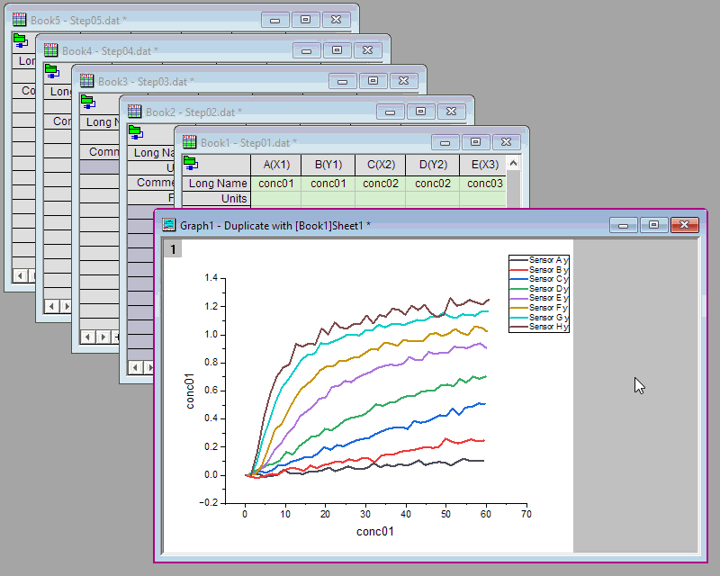

Diagramm mit Browserfeld
Graph-Browser
Origins Diagramm mit Fensteransicht und Browser kann verwendet werden, um Datensätze aus einem oder mehreren Arbeitsblättern selektiv zu zeichnen. Das Browserdiagramm hat ein Bedienfeld auf der linken Seite des Fensters, das verwendet wird, um verfügbare Daten auszuwählen (zufällig oder nach Muster), die Neuskalierung nach Datenänderung zu steuern, einen allgemeinen Anzeigebereich für alle Zeichnungen festzulegen oder Zeichnungen zu entfernen.
Browserdiagramm mit wechselnder Spalte
- Aktivieren Sie das Quellarbeitsblatt, markieren Sie die gewünschten Spalten oder markieren Sie nichts und wählen Sie Zeichnen > Browser: Schwarze Linien/Farbige Linien/Histogramm/Gestapelte Linien/Gestapelt ....
oder
- Zeichnen Sie ein allgemeines 2D-Diagramm, klicken Sie auf den Rand der Diagrammseite und klicken Sie in der Minisymbolleiste auf die Schaltfläche Browserdiagramm mit wechselnder Spalte
 , um das Browserfeld zu zeigen.
, um das Browserfeld zu zeigen.
Browserdiagramm mit wechselnder/m Blatt/Mappe
- Zeichnen Sie ein allgemeines 2D-Diagramm, klicken Sie auf den Rand der Diagrammseite und klicken Sie in der Minisymbolleiste auf die Schaltfläche Browserdiagramm mit wechselndem/r Blatt/Mappe
 , um das Browserfeld zu zeigen.
, um das Browserfeld zu zeigen.
Bedienelemente für Browserdiagramm mit wechselnder Spalte
In der Zeichnungsliste zu zeigende Metadaten
Legen Sie die Metadaten fest, die in der Zeichnungsliste gezeigt werden, einschließlich Datenbereich, Kurzname, Langname, Kommentare, Einheiten, Mappe, Blatt und Spaltenindex. Wenn die Spalten im Blatt > 26 sind und kein Langname existiert, wird der Spaltenindex anstelle des Kurznamens gezeigt.
- Wählen Sie Zeilenüberschrift, um den Zeilenindex als Zeilenheader für die Zeichnungen zu zeigen.
- Klicken Sie auf einen Spaltenheader, um die Zeichnungen entsprechend der aktuellen Dateninformationen aufsteigend oder absteigend neu zu ordnen.
- Klicken Sie mit der rechten Maustaste auf den Spaltenheader, um die Spaltenüberschriften zu zeigen bzw. zu verbergen oder um die aktuelle Konfiguration als Standard festzulegen (Als Standard setzen).

Anzeige der Datenzeichnungen im Browserstapel synchronisieren
Für einen Browserstapel gibt es im Menü eine zusätzliche Option Anzeige der Datenzeichnungen synchronisieren, die per Standard aktiviert ist.
Siehe weitere Informationen unten unter Stapeldiagramme mit mehreren Feldern im Browser zeichnen.
Alle Objekte im gleichen Matrixblatt auflisten
Erstellen Sie ein Kontur- oder Bilddiagramm aus einem Matrixobjekt und zeigen Sie das Browserfeld an. Alle Matrixobjekte im gleichen Matrixblatt werden im Browserfeld aufgeführt. Klicken Sie auf Dateninfo in der Liste, um zu einer anderen Zeichnung eines Matrixobjekts zu wechseln.
Bedienelemente des Browserfensters
Klicken Sie auf die Schaltfläche  , um das Menü Browser zu zeigen:
, um das Menü Browser zu zeigen:
|
|
| Für die meisten Diagrammtypen |
Für Kontur- und Bilddiagramme, die aus einer Matrix erstellt wurden |
Zeichnungen auswählen und durchblättern
Wählen Sie Zeichnungen aus bzw. heben Sie ihre Auswahl auf. Sie können ein Menüelement auswählen, um alle Zeichnungen auszuwählen, die Auswahl aller Zeichnungen aufzuheben oder jede N-te Zeichnung auszuwählen. Sie können auch mit im Dialog Durchblättern festgelegten Schritten durch die Zeichnungen gehen.
-
- Geben Sie das Inkrement für Verschieben um ein und klicken Sie auf die Pfeilschaltflächen (vorwärts oder rückwärts), um durch die Zeichnungen zu blättern (geben Sie z. B. eine 2 ein und klicken Sie auf eine Pfeilschaltfläche, um jede zweite Zeichnung anzuzeigen).
- Alternativ können Sie den Schieber bewegen, um vorwärts oder rückwärts zu blättern.
- Klicken Sie auf Export, um den Dialog Diagramm als Video exportieren (X-Funktion = expG2video) zu öffnen und das Browserdiagramm als Video (GIF, TIFF, AVI) zu exportieren.
-
Modus der automatischen Neuskalierung
Legt den Modus der automatischen Neuskalierung fest - nicht automatisch neu skalieren, nur die Y-Achse automatisch neu skalieren oder alle Achsen automatisch neu skalieren.
Spaltenbeschriftungen direkt bearbeiten
Durch Aktivieren dieser Option wird die direkte Bearbeitung der Spaltenbeschriftungen im Bedienfeld Browser möglich.
- Klicken Sie auf die Menüschaltfläche und platzieren Sie ein Häkchen neben Spaltenbeschriftungen direkt bearbeiten.
- Beachten Sie, wenn Sie Kommentare hinzufügen möchten und diese Spalte nicht sehen, dass Sie mit der rechten Maustaste in den Bereich der Spaltenüberschrift klicken und ein Häkchen neben Kommentare platzieren.
- Ziehen Sie an den Spaltenüberschriften, um sie neuzuordnen.
Allgemeiner Anzeigebereich
Legen Sie fest, ob der kleinste Datenbereich in allen Zeichnungen als allgemeiner Anzeigebereich verwendet werden soll, um alle Datenpunkte in diesem Bereich für alle Zeichnungen anzuzeigen.
 |
Dieses kleine Tutorial zeigt Ihnen, wie der Allgemeiner Anzeigebereich funktioniert:
- Importieren Sie die Beispieldatei "<Origin-Programmordner>\Samples\Graphing\Waterfall.dat" in eine neue Arbeitsmappe.
- Wählen Sie die erste Zeile und klicken Sie mit der rechten Maustaste, um im Kontextmenü "Als Langname festlegen" zu wählen.
- Markieren Sie alle Spalten und wählen Sie Zeichnen > Browser: Farblinien, um ein Browserdiagramm zu zeichnen.
- Klicken Sie auf die Pfeilschaltfläche links oben im Diagrammfenster, um sicherzustellen, dass Allgemeiner Anzeigebereich ausgewählt wurde.
- Wählen Sie die erste Zeichnung "600" im linken Bedienfeld und wählen Sie dann Daten: Bereich bearbeiten, um den Bereich wie unten festzulegen:
- Klicken Sie auf andere Zeichnungen im linken Bedienfeld. Sie werden sehen, dass der Anzeigebereich all dieser Zeichnungen auf den obigen benutzerdefinierten Bereich gesetzt wurde.
|
Dieses Menüelement funktioniert genauso wie der LabTalk-Befehl "layer.commonrange=1;".
Gestapelte Linien nach Y-Versatz
Wenn Sie Browserdiagramme mit Linien/Histogramm zeichnen, können Sie dieses Menüelement wählen, um die ausgewählten Linien mit einem Y-Versatz zu stapeln. Standardmäßig beträgt der Versatz der gestapelten Linien automatisch 8 % der aktuellen Layerhöhe genauso wie der Linienbrowser, der über das Menü Zeichnen > Browser: Gestapelte Linien gezeichnet wird.
Linien gruppieren nach
Wenn Sie Linien mit Y-Versatz aktiviert haben, wird die Auswahlliste Linien gruppieren nach angezeigt. Mit ihr können Sie entscheiden, ob die Linien mit den Spaltenbeschriftungszeilen in Teilgruppen unterteilt und die Linien dann nach Teilgruppe gestapelt werden sollen.
Wenn Sie eine Spaltenbeschriftungszeile für diese Liste aktiviert haben (nicht Auto), wird die Option Versatz zwischen Untergruppen (auf Registerkarte Gruppe) für Konstant/Auto auf der Registerkarte Stapeln im Dialog Details Zeichnung aktiviert. Diese Spaltenbeschritungszeile wird in der Gruppe Untergruppierung als Untergruppierungsinformation auf der Registerkarte Gruppe im Dialog Details Zeichnung ausgewählt.
Mehr Spalten hinzufügen
Wenn Sie die Zeichnungen durchblättern, können Sie entscheiden, ob mehr relative Spalten in den ersten Layer des Diagramms im Browser einfügen möchten:
- Alle Spalten aus gleichem Blatt: Fügen Sie alle Spalten im aktuellen Arbeitsblatt in den aktuellen Diagrammlayer ein; beim Stapeldiagramm werden die Spalten in Layer 1 des Diagramms eingefügt.
- Ähnliche Spalten aus gleicher Mappe: Fügen Sie ähnliche Spalten aus der gleichen Arbeitsmappe in den aktuellen Diagrammlayer ein; beim Stapeldiagramm werden die Spalten in Layer 1 des Diagramms eingefügt.
- Ähnliche Spalten aus anderen Mappen: Fügen Sie ähnliche Spalten aus anderen Arbeitsmappen in den aktuellen Diagrammlayer ein; beim Stapeldiagramm werden die Spalten in Layer 1 des Diagramms eingefügt.
Quellarbeitsblatt ändern
Wenn alle im Browserfeld aufgeführten Spalten aus dem gleichen Arbeitsblatt stammen, können Sie Arbeitsblatt ändern: <Arbeitsblattname> wählen, um die Quelldaten des aktuellen Diagramms auf ein anderes Arbeitsblatt mit der gleichen Datenstruktur umzustellen.
Alle übereinstimmenden Arbeitsblätter mit der gleichen Datenstruktur werden im Kontextmenü Arbeitsblatt ändern aufgelistet.
Allgemeiner Z-Bereich
Diese Option ist nur für Kontur- und Bilddiagramme, die aus einer Matrix erstellt wurden.
Beim Erstellen eines neuen Kontur- oder Bilddiagramms ist diese Option standardmäßig aktiviert. Die Zeichnungen verwenden den minimalen und maximalen Z-Wert von allen Zeichnungen als Von und Bis für die Ebenen der Farbabbildung.
Z-Bereich neu skalieren
-
Diese Option aktivieren
- Aktivieren Sie eine der Zeichnungen in der Liste im linken Bedienfeld und klicken Sie auf die Schaltfläche Neu skalieren. Die Zeichnungen im Diagramm verwenden den minimalen und maximalen Z-Wert von allen Zeichnungen als Von und Bis für die Ebenen der Farbabbildung.
-
Diese Option deaktivieren
- Aktivieren Sie eine der Zeichnungen in der Liste im linken Bedienfeld und klicken Sie auf die Schaltfläche Neu skalieren. Die Zeichnungen im Diagramm verwenden den minimalen und maximalen Z-Wert der aktiven Zeichnungen als Von und Bis für die Ebenen der Farbabbildung.
Schaltfläche Sortierreihenfolge auf Layer automatisch anwenden
Klicken Sie auf die Schaltfläche Sortierreihenfolge auf Layer automatisch anwenden  , um die Sortierreihenfolge vom linken Browserfeld automatisch auf die Zeichnungen im aktuellen Layer anzuwenden.
, um die Sortierreihenfolge vom linken Browserfeld automatisch auf die Zeichnungen im aktuellen Layer anzuwenden.
Wenn Sie das automatische Anwenden ausschalten möchten, können Sie auf die Schaltfläche  klicken, um das Sortieren der Zeichnungsreihenfolge nicht automatisch anzuwenden.
klicken, um das Sortieren der Zeichnungsreihenfolge nicht automatisch anzuwenden.
Kontextmenü des Bedienfelds
Klicken Sie mit der rechten Maustaste in das Bedienfeld, um ein Kontextmenü zu erstellen:
- Entfernen: Entfernt die ausgewählte(n) Zeichnung(en).
- Ausgewählte entfernen: Entfernt alle außer die ausgewählte(n) Zeichnung(en).
- Gehen zu ...: Sie wechseln zum Arbeitsblatt und wählen Quellspalte(n) aus.
- Neues Diagramm erzeugen: Sie erstellen ein neues Diagrammfenster aus nur der/-n ausgewählte(n) Zeichnungen.
 |
Die Auswahl von Gehen zu ... aktiviert die Quelldaten für Ihr(e) aktuelles/-n Browserdiagramm(e). Um diese Daten zu isolieren, (a) klicken Sie mit der rechten Maustaste in den Bereich der Spaltenbeschriftungszeile von einer der ausgewählten Arbeitsblattspalten und wählen Kopieren (einschließlich Beschriftungszeilen), (b) gehen Sie zu einem neuen Arbeitsblatt und markieren das gesamte Arbeitsblatt, indem Sie in die leere Zelle bei der Überschneidung von Spalten- und Zeilenbeschriftungen klicken, (c) sie dann einfügen.
|
Neue Grafik erzeugen
Verwenden Sie diese Option, um die aktuelle Browserauswahl als ein separates Diagrammfenster im Fensteransichtsmodus zu zeichnen:
- Klicken Sie mit der rechten Maustaste auf Ihre Zeichnungsauswahl im Browserbedienfeld.
- Wählen Sie Neues Diagramm erzeugen.
Bedienelemente für Browserdiagramm mit wechselndem/r Blatt/Mappe
Wenn Sie den Browser mit wechselndem/r Blatt/Mappe mit LabTalk-Befehl oder Minisymbolleiste aktiviert haben:
- Stammen die Datenspalten des Diagramms aus dem gleichen Blatt, führt das Browserfeld alle Blätter mit der gleichen Struktur auf, genauso wie beim Stapelzeichnen mit Blatt (Spaltenübereinstimmung mit Spaltenindex, Modifiziererübereinstimmung mit Versatz).
- Stammen die Datenspalten des Diagramms aus der gleichen Mappe, führt das Browserfeld alle Mappen mit der gleichen Struktur auf, genauso wie beim Stapelzeichnen mit Mappe (Spaltenübereinstimmung mit Spaltenindex, Modifiziererübereinstimmung mit Versatz, Blattübereinstimmung mit Index).
In diesem Modus unterstützt das Browserfeld mit Blatt-/Mappenliste nur die Einzelauswahl.
Bedienelemente des Browserfensters
Klicken Sie auf die Schaltfläche , um das Menü Browser zu zeigen:
|
|
| Zum Blattwechseln |
Zum Mappenwechseln |
- Durchblättern: Sie können dieses Bedienelement verwenden, um das Blatt auszuwählen, indem Sie durch alle aufgeführten Blätter gehen, ähnlich wie beim Browser mit wechselnder Spalte.
- Automatische Neuskalierung: Wählen Sie den Modus der automatischen Neuskalierung für das Diagrammfeld wie beim Browser mit wechselnder Spalte.
- Datenfilter: Filtern Sie ähnliche Blätter/Mappen und führen Sie sie in der Feldliste auf.
In der Blatt-/Mappenliste zu zeigende Metadaten
Klicken Sie mit der rechten Maustaste auf den Spaltenheader der Feldliste, um zu zeigen, welche Metadaten sich in der Blatt-/Mappenliste befinden:
- Als Standard setzen: 3 Standardeinstellungen zum Auflisten von Blättern/Mappen. Um Blätter aufzulisten, sollten Sie den Blattnamen auswählen. Um Mappen aufzulisten, sollten Sie standardmäßig den Mappennamen auswählen.
- Zeilenüberschrift: Wählen Sie die Zeilenüberschrift, um den Zeilenindex als Zeilenheader für die Zeichnungen zu zeigen.
- Mappenname: Der Mappenkurzname wird gezeigt.
- Mappenkommentare:Kommentare im Dialog Fenstereigenschaften der Arbeitsmappe.
- Blattname: Es wird der Blattname gezeigt, die im Dialog Name und Notizen gespeichert ist.
- Blattbeschriftung: Der Blattname, der im Dialog Name und Notizen gespeichert ist, wird gezeigt.
- Blattnotizen: Blattnotizen, die im Dialog Name und Notizen gespeichert sind.
Kontextmenü im Feld für Blätter/Mappen
Klicken Sie mit der rechten Maustaste auf eine zeile in der Blatt-/Mappenliste. Ein Kontextmenü wird angezeigt:
Einzelheiten zur Funktion dieser Menüelemente finden Sie im Abschnitt zum Kontextmenü des Browsers mit wechselnder Spalte.
Stapeldiagramme mit mehreren Feldern im Browser zeichnen
Seit Origin 2021 unterstützt Origin das Zeichnen von Stapeldiagrammen mit mehreren Feldern mit dem Browserfeld:
- Wählen Sie Zeichnen > Browser: Gestapelt ... im Menü, um den Dialog Stack:plotstackbrowser zu öffnen.
- Wählen Sie eine Spaltenbeschriftungszeile für Gruppieren nach und dann Bstack als Diagrammvorlage; bestimmen Sie den Abstand zwischen den Layern und dem Rand um die Felder.
- Klicken Sie auf die Schaltfläche OK, um das Stapeldiagramm zu zeichnen.
|
Sie können eine benutzerdefinierte Vorlage festlegen, um Ihr gestapeltes Browserdiagramm zu zeichnen. Siehe die Hinweise auf dieser Seite, um mehr Informationen zu erhalten.
|
Wenn Sie das Stapeldiagramm gezeichnet haben, werden im Diagramm N Layer gestapelt, falls die Zeile Gruppieren nach N Werte hat. Alle Y-Spalten, die durch den ersten Gruppierungswert gruppiert werden, werden in das erste Feld gezeichnet und die anderen Spalten mit dem gleichen Gruppierungswert werden nacheinander entsprechend der Gruppierungswerte in einen Diagrammlayer gezeichnet.
Im Browserfeld werden alle Spalten, die in Layer 1 gezeichnet sind, Zeile für Zeile aufgelistet.
- Standardmäßig wurde das Bedienelement Zeichnungen mit Gleichem zeigen/verbergen Im Dialog Details Zeichnung auf Index gesetzt. Das bedeutet, wenn Sie eine oder mehrere Spalten gleichzeitig ausgewählt haben, dass die anderen Y-Spalten mit dem gleichen Zeichnungsindex in anderen Layern gezeigt werden.
- Wenn Sie bei einer oder mehreren gleichzeitig ausgewählten Spalten das Bedienelement Zeichnungen mit Gleichem zeigen/verbergen im Dialog Details Zeichnung auf Name setzen, werden die anderen Y-Spalten mit dem gleichen Namen (Gruppierungswert) in den anderen Layern gezeigt.
Allgemeine Operationen auf Diagramm/Layer/Zeichnungen
Alle grafischen Operationen können für die im rechten Grafkikbedienfeld angezeigten Zeichnungen durchgeführt werden, einschließlich das benutzerdefinierte Anpassen der Achsen im Dialog Achsen, das Festlegen der Zeichnungsstile für die Zeichnung(en) und das Vornehmen der Einstellungen für den Ebenen Layer und Diagramm (Graph) im Dialog Details Zeichnung. Die Minisymbolleisten sind ebenfalls für diese Art von Diagramm verfügbar.
Wie bei allgemeinen Diagrammen können Sie die Analysedialoge/-hilfsmittel öffnen, um die Daten weiter zu untersuchen.
Zwei Dinge sind wichtig zu beachten:
- Wenn Sie im linken Bedienfeld die Zeichnungsauswahl getroffen haben, bleibt die Auswahl im linken Bedienfeld des Dialogs Details Zeichnung bestehen.
- Wenn Sie ein Stapeldiagramm mit Browserbedienfeld auf Seitenebene der Registerkarte Layer im Dialog Details Zeichnung gezeichnet haben,
- wird das Bedienelement Zeichnungen mit Gleichem zeigen/verbergen per Standard auf Index gesetzt. Das bedeutet, wenn Sie eine Zeichnung im Browserfeld wählen, werden alle Zeichnungen in unterschiedlichen Layern, aber mit dem gleichen Index gezeigt.
- wird die Option Layer des Bedienelements Anwenden auf und Ausschließen in der zugehörigen Auswahlliste ausgewählt. Falls gewünscht, können Sie eine Layernummer eingeben, um den Layer beim Anwenden der obigen allgemeinen Anzeigeeinstellungen auszuschließen.
- Die Objektverwaltung zeigt nur die Diagramm- und Layerbaumknoten und verbirgt alle Zeichnungen.
Anzeige der Datenzeichnungen synchronisieren
Diese Bedienelemente können verwendet werden, um die Anzeige der Zeichnungen zu bearbeiten.
- Wenn Synchronisieren aktiviert ist, wird ein Ausklappmenü Metadaten zeigen für hinzugefügt. Verwenden Sie das Ausklappmenü, um einen Layer auszuwählen. Klicken Sie dann mit der rechten Maustaste auf den Header des Browserfelds und wählen Sie die anzuzeigende Info der Spaltenbeschriftungszeile (Metadaten). Sie können dann auf eine Zeile in der Zeichnungsliste klicken, um diesen Datensatz mitsamt der zugehörigen Zeichnungen in anderen Layern zu zeichnen. Im obigen Beispiel wird Delta Temperature in Layer 1 gezeichnet, dies sind also die Metadaten, die in der Liste des Browserfelds gezeigt werden.
- Das Deaktivieren von Synchronisieren erlaubt Ihnen, die Zeichnungen in nur dem ausgewählten Layer zu ändern, ohne die Zeichnungen in anderen Layern zu beeinträchtigen. In dem obigen Beispiel haben wir gewählt, Inhalte nur für Layer 1 zu zeigen (d. h., wenn wir einen anderen Datensatz für Delta Temperature in der Liste des Browserfelds wählen, ändern sich die Zeichnungen in Layer 2 und Layer 3 nicht).
Diagrammbrowser über Minisymbolleiste zeigen
Browser mit wechselnder Spalte
Verwenden Sie die Schaltfläche Browserdiagramm mit wechselnder Spalte auf der Minisymbolleiste für die Diagrammseite, um den Browser anzuzeigen.

Browser mit wechselnder/m Blatt/Mappe
Verwenden Sie die Schaltfläche Browserdiagramm mit wechselndem/r Blatt/Mappe auf der Minisymbolleiste für die Diagrammseite, um den Browser anzuzeigen.
- 